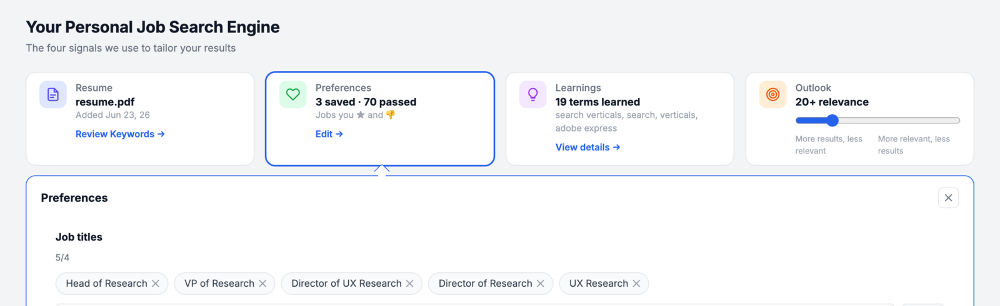
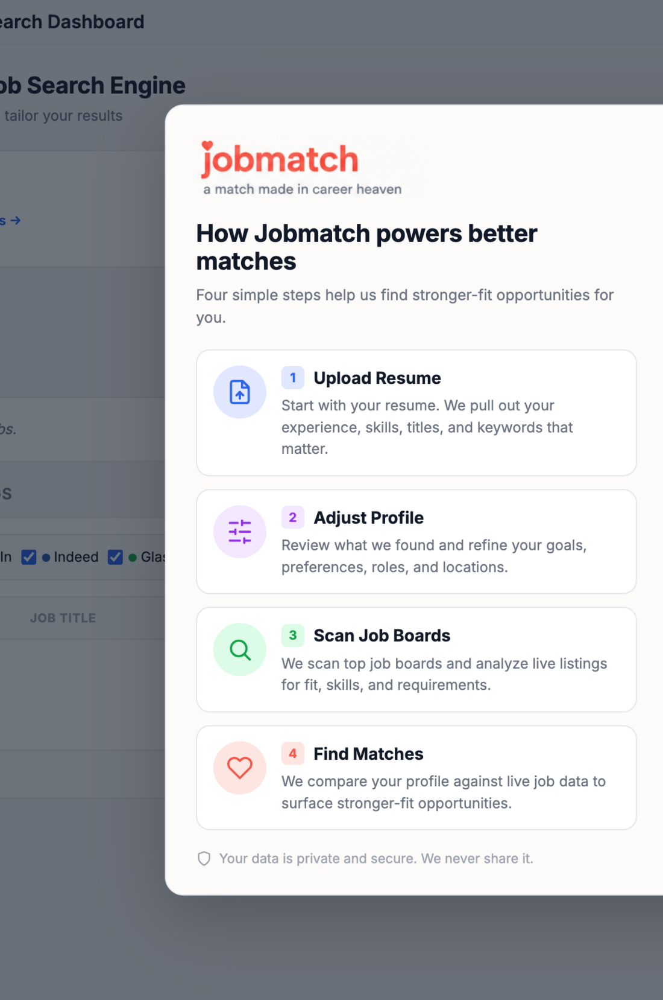
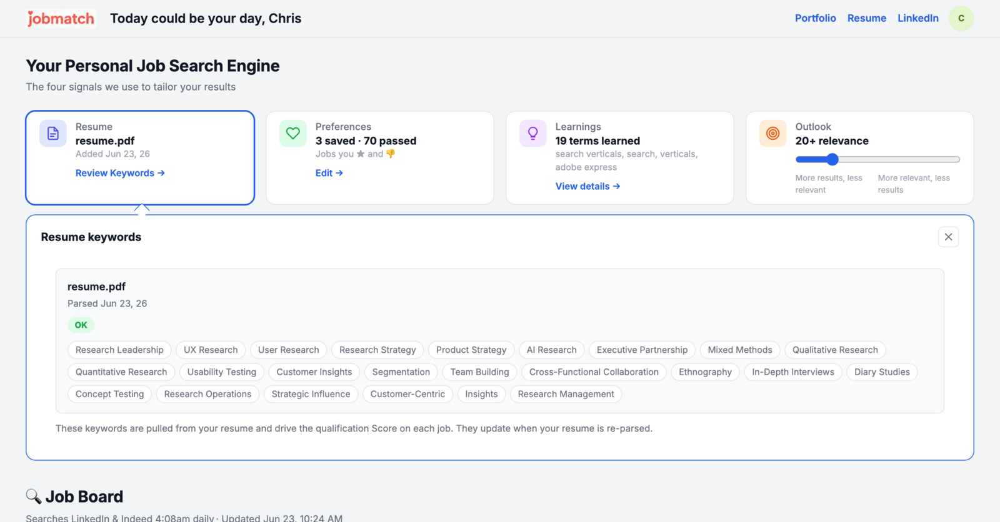
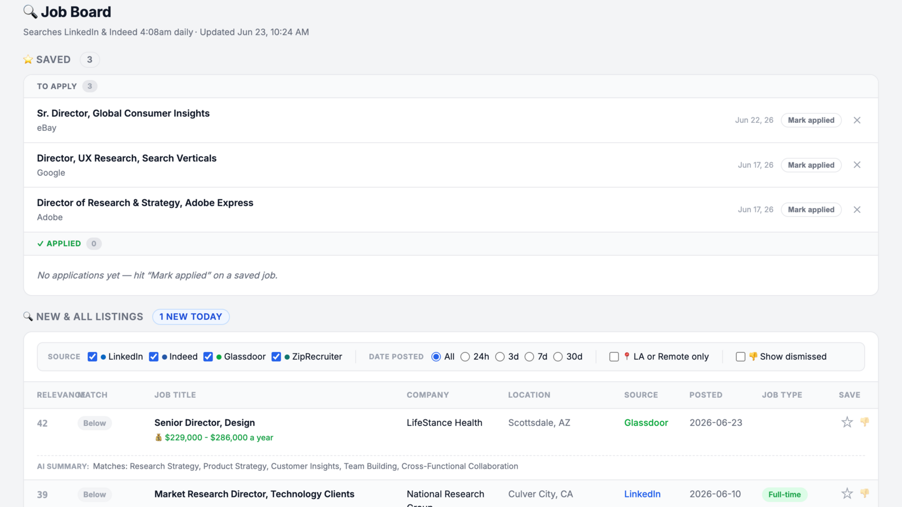
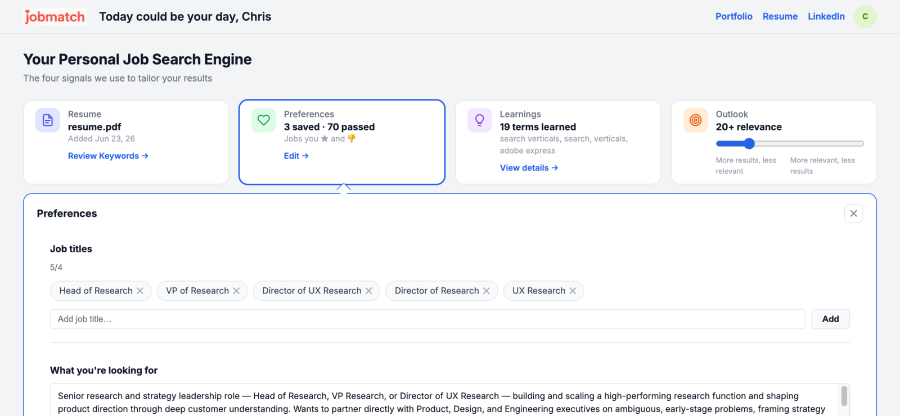
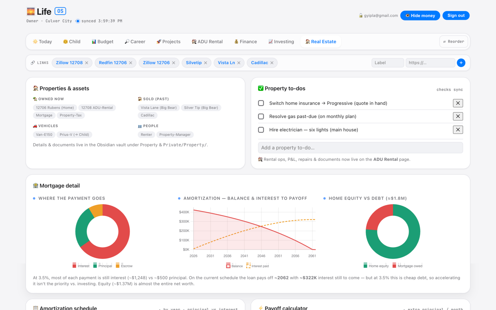
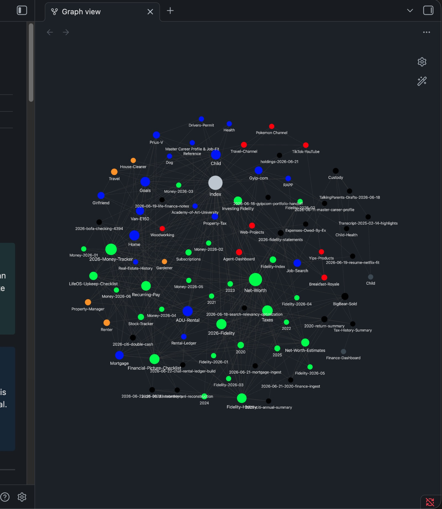
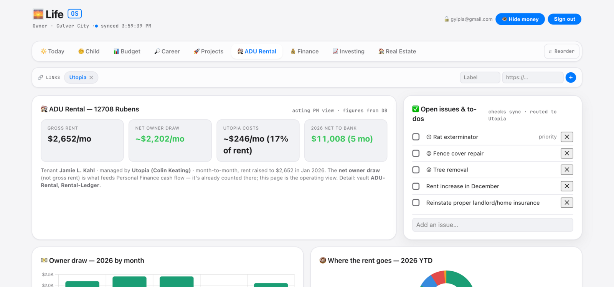

Personal
AI Lab
I'm an art director who builds. The two systems below run my actual life: a job-matching pipeline that scores real listings against my profile, and a dashboard that holds the rest of my operations in one place. They aren't mockups. They run.
JobsMatch
Hundreds of postings land every day and most are noise. I was checking four boards by hand.
So I automated it. Apify actors scrape the boards on a schedule and write every listing to Supabase. A scoring engine ranks each one against my profile, and the dashboard shows the top matches with a full score breakdown.
The payoff: a morning that used to eat ~30 minutes of tab-surfing is now a 2-minute scan of one ranked list I trust.

SCORING
DIMENSIONS
The weights say what I care about.
INTERFACE
Screens from the working system. Click to enlarge.




LifeOS
LifeOS pulls work, health, finance, and creative projects onto one surface, so I can see what's slipping without hunting across six apps.

THE
SECOND BRAIN
A knowledge layer beside LifeOS. Its job is to make anything I capture retrievable when it matters.

INTERFACE

Hiring? This is how I work, end to end, from data and logic to the interface. If that's useful on your team, let's talk.